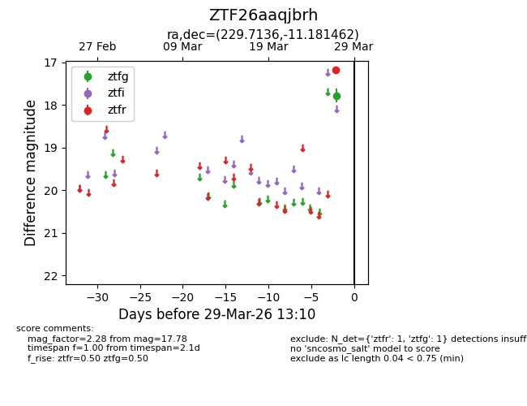
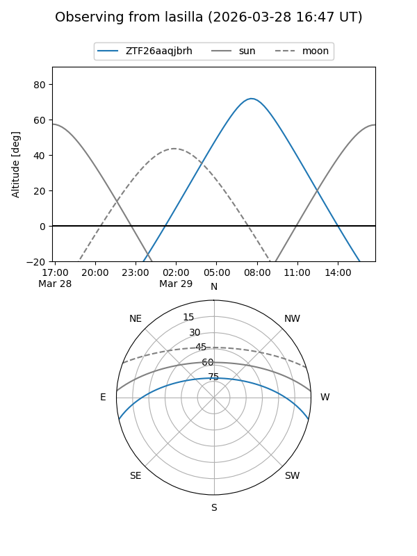
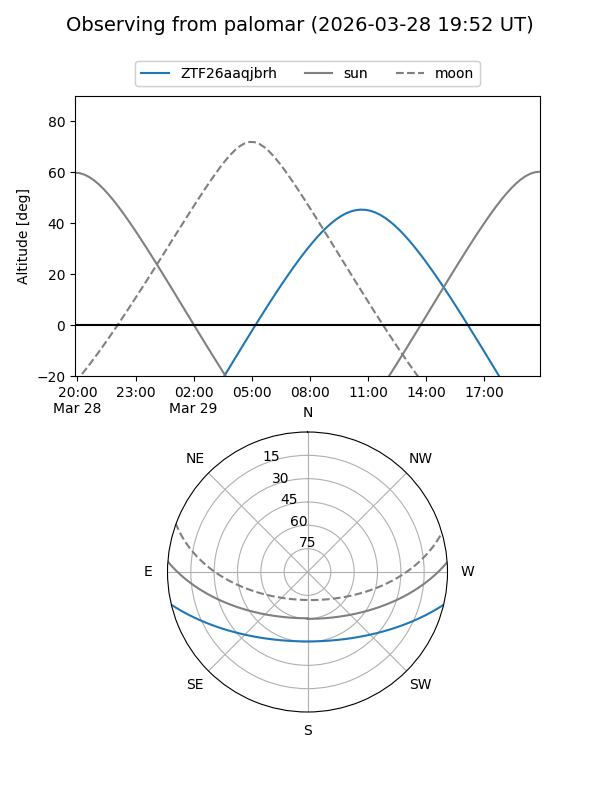

ZTF26aaqjbrh
Target ZTF26aaqjbrh at 2026-03-29 13:14
Aliases and brokers:
FINK: link
Lasair: link
ALeRCE: link
alt names
ZTF26aaqjbrh (ztf,fink_ztf)
Coordinates:
equatorial (ra, dec) = 229.7136,-11.18146
equatorial (HMS+DMS) = 15:18:51.27,-11:10:53.26
galactic (l, b) = (350.8929,+37.60369)
Flags:
Photometry:
last ztfg=17.78, ztfr=17.17
1 ztfg, 1 ztfr detections
Lightcurve

Visibility


Additional plots